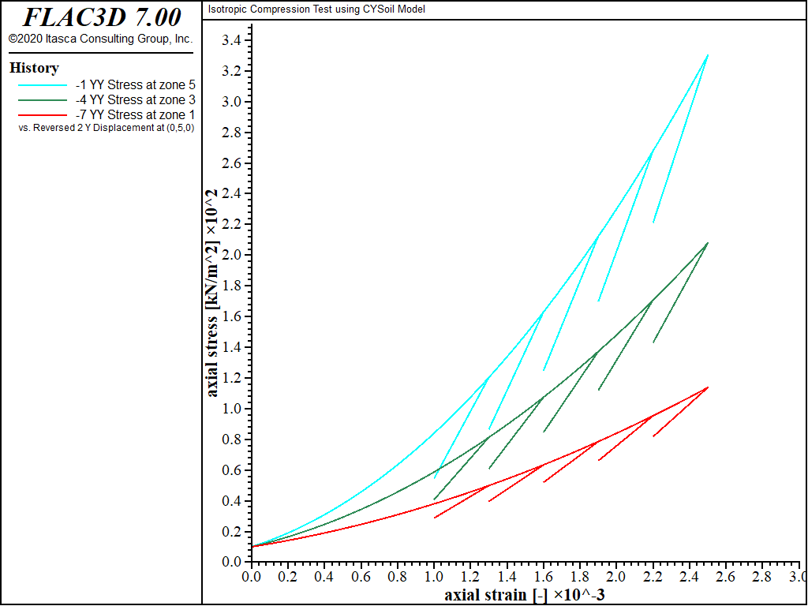
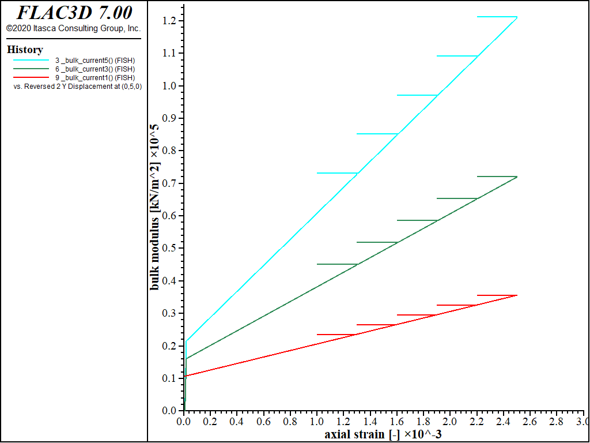

采用 CYSoil 模型的各向同性压缩试验
注意
要在 FLAC3D 中查看此项目，请使用菜单命令 。 选择“ConstitutiveModels/ IsotropicCompressionCYSoil”并选择“IsotropicCompressionCYSoil.f3dprj”以加载。 该项目的主数据文件见本示例末尾（main data file）。
使用 CYSoil 模型（CYSoil model）对密砂、中密砂和松砂进行各向同性压缩试验模拟。各网格单元的初始应力状态均为各向同性；围压大小为 \(\sigma_{xx}\) = \(\sigma_{yy}\) = \(\sigma_{zz}\) = 10 kN/m2。试验中砂为正常固结（初始帽盖压力等于 10 kN/m2）。试验所用的 CYSoil 模型特性列于 表 1（Table 1）。 表中未列出的任何特性均取 CYSoil 模型的默认值（参见 完整特性（complete properties））。网格单元底部在轴向（\(y\)） 方向固定，在网格单元顶部和侧向施加大小为 10-6 m/步的围压速度， 总共计算 2500 步。还包括五次卸载/再加载循环。
| 参数 | 密砂 | 中密砂 | 松砂 |
|---|---|---|---|
| \(G_{ref}\) | 300 | 225 | 150 |
| \(\phi_f\) | 45 | 45 | 45 |
| \(p_{ref}\) (kPa) | 100 | 100 | 100 |
| \(p_c\) (kPa) | 10 | 10 | 10 |
| \(\nu\) | 0.2 | 0.2 | 0.2 |
| \(m\) | 0.5 | 0.5 | 0.5 |
| \(R\) | 0.667 | 0.667 | 0.667 |
试验的竖向（轴向）应力与轴向应变关系图给出了密砂、中密砂和松砂三种情况，见 图 1（Figure 1）。该图显示了幂律关系以及较密土所达到的更高刚度，这与模型预期相符。试验的弹性体积模量与轴向应变关系图见 图 2（Figure 2）。可以看出体积模量在卸载/再加载过程中保持恒定；此外，应变水平越高，该值越大， 这与该特性依赖于塑性变形的规律一致。


图 1：密砂、中密砂和松砂的轴向应力（kN/m2）与轴向应变的关系。


图 2：密砂、中密砂和松砂的体积模量（kN/m2）与轴向应变的关系。
数据文件
IsotropicCompressionCYSoil.dat
model new
model title "Isotropic Compression Test using CYSoil Model"
model large-strain off
[global _pc0 = 10.]
zone create brick size 1 5 1
zone cmodel assign cap-yield
zone property density=1000 pressure-reference=100 ...
poisson=0.2 multiplier=0.667
zone property friction=45.0 pressure-initial=[_pc0] ...
flag-cap=1 pressure-cap=[_pc0]
zone cmodel assign null range id-list 2,4
zone property shear-reference 300 range id 5
zone property shear-reference 225 range id 3
zone property shear-reference 150 range id 1
zone gridpoint fix velocity
zone initialize stress xx [-_pc0] yy [-_pc0] zz [-_pc0]
zone gridpoint initialize velocity-x -1e-6 range position-x 1
zone gridpoint initialize velocity-z -1e-6 range position-z 1
zone gridpoint initialize velocity-y -1e-6 ...
range union position-y 1 position-y 3 position-y 5
[global _z5 = zone.find(5)]
[global _z3 = zone.find(3)]
[global _z1 = zone.find(1)]
fish define _bulk_current1
global _bulk_current5 = zone.prop(_z5, 'bulk')
global _bulk_current3 = zone.prop(_z3, 'bulk')
global _bulk_current1 = zone.prop(_z1, 'bulk')
end
history interval 10
zone history stress-yy zoneid 5
zone history displacement-y position (0,5,0)
fish history _bulk_current5
zone history stress-yy zoneid 3
zone history displacement-y position (0,3,0)
fish history _bulk_current3
zone history stress-yy zoneid 1
zone history displacement-y position (0,1,0)
fish history _bulk_current1
fish define trip
loop local i (1,5)
command
zone gridpoint initialize velocity-x -1e-6 range position-x=1.0
zone gridpoint initialize velocity-z -1e-6 range position-z=1.0
zone gridpoint initialize velocity-y -1e-6 ...
range union position-y=1 position-y=3 position-y=5
model step 300
zone gridpoint initialize velocity (-0.1,-0.1,-0.1) multiply
model step 3000
zone gridpoint initialize velocity (-1.0,-1.0,-1.0) multiply
model step 3000
end_command
end_loop
end
model step 1000
[trip]
| 这些内容对您有帮助吗？… | FLAC3D © 2019, Itasca | 原文更新于 2020 年 10 月 8 日 |